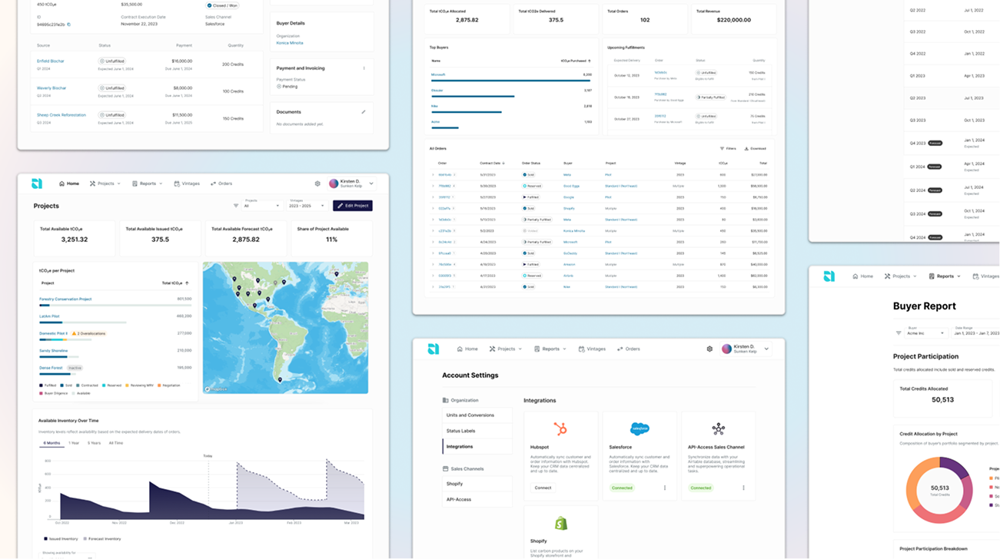
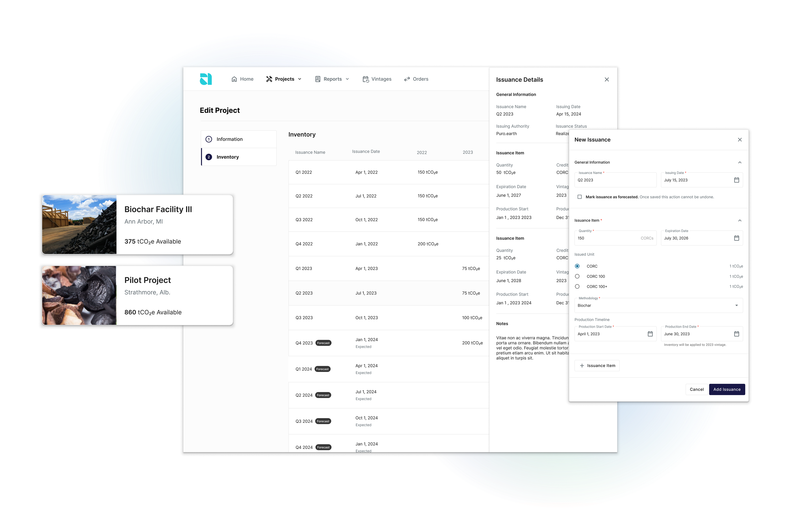
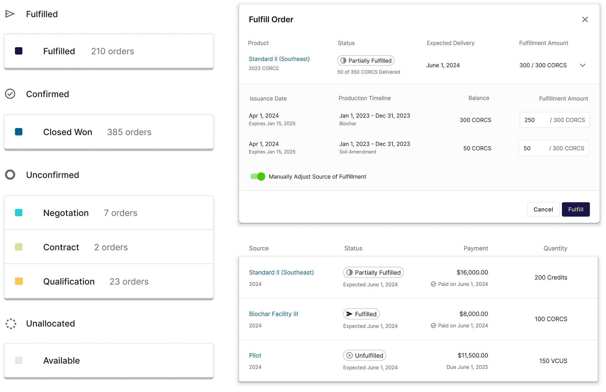
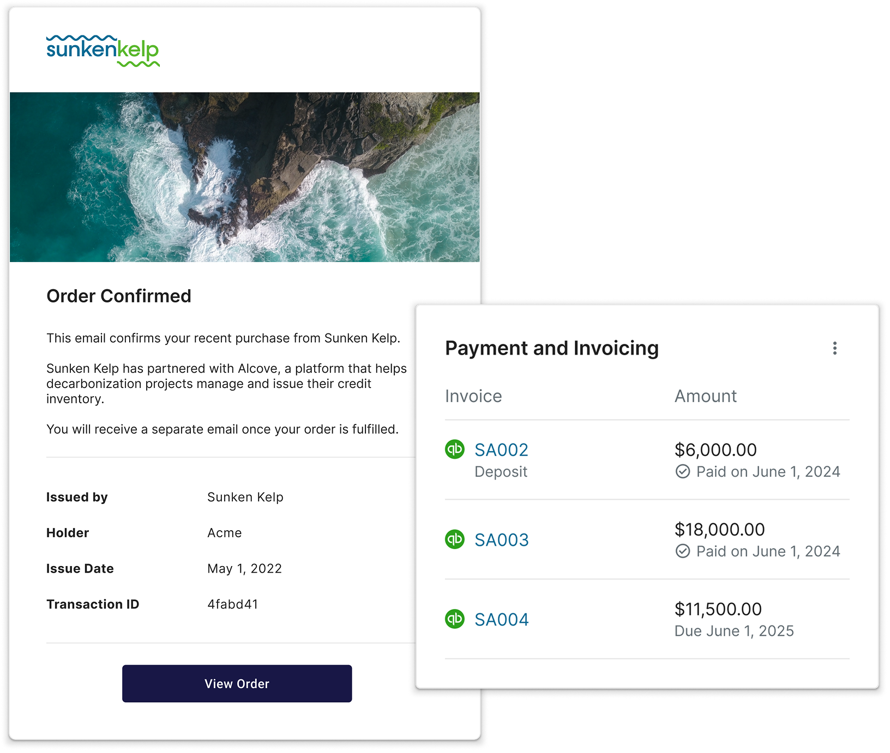
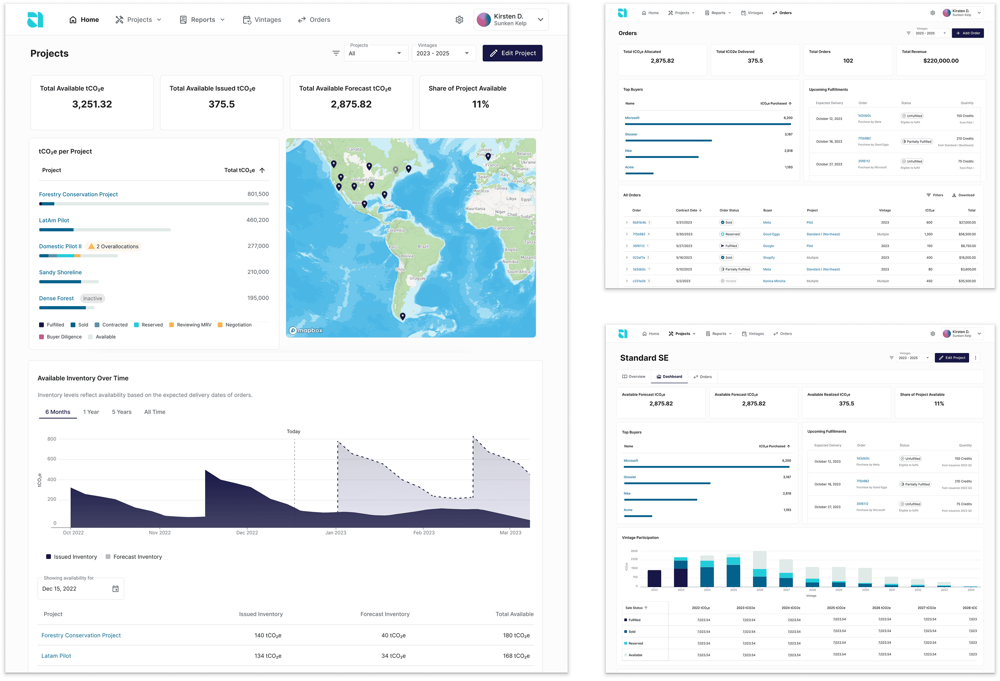
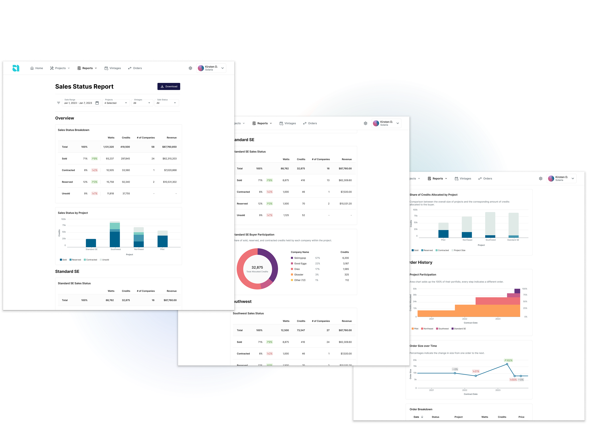

Alcove
Carbon Inventory Management
Led the end-to-end design of the product, defining the data model, workflows, and interfaces to help suppliers accurately track carbon credit inventory across projects and time. Worked closely with customers, engineers, and domain experts to translate complex and constantly changing credit accounting rules into a clear, auditable system that supports forecasting, traceability, and compliance.
The Inventory Management System helps carbon removal suppliers track and manage the flow of carbon credits and associated data across projects, facilities, and time. It provides a structured, auditable record of when and where carbon was removed, issued, transferred, or sold—enabling accurate reporting, inventory forecasting, and alignment with market and regulatory requirements.
Users can create projects to store key information such as location, timelines, documents, and metadata. Each project can include two types of credit issuances: forecasted and realized. Forecasted issuances support forward sales but are not valid for fulfillments; their values can change over time, with built-in guardrails to prevent over- or under-selling. Realized issuances require verified data, are less mutable, and can be used to fulfill deliveries.

The system organizes inventory into different stages—each with tailored rules to reflect the progression of a sale. These lifecycle stages provide guardrails around allocation, allowing greater flexibility in early stages while enforcing stricter controls as commitments are finalized. The fulfillment flow supports partial deliveries across time and multiple issuances, accommodating the complexity of long-term offtake agreements.

Suppliers can notify buyers when an order is confirmed or fulfilled, granting them access to a customer portal where they can view their credit portfolio and receive updates on associated projects. The platform also supports payment and invoicing workflows, including the ability to generate QuickBooks invoices directly within Alcove. This integration enables suppliers to track payment status and align credit fulfillment accordingly.

Dashboards serve as the primary surface for monitoring credit inventory, project activity, and order status across the platform. They provide both high-level overviews and project-specific insights, helping suppliers stay on top of key metrics. Custom visualizations were developed to track inventory movement across the credit lifecycle, while built-in alerts highlight issues like overallocation, overdue payments, and unfulfilled deliveries.

Reports were developed in close collaboration with customers who previously relied on manual processes. Key reports like the Sale Status Report and Buyer Report offer filtered views into project and customer performance, helping suppliers track progress across their portfolio. With built-in date range selectors, the platform also surfaces trends over time, enabling teams to monitor sales velocity and assess performance against annual KPIs.
